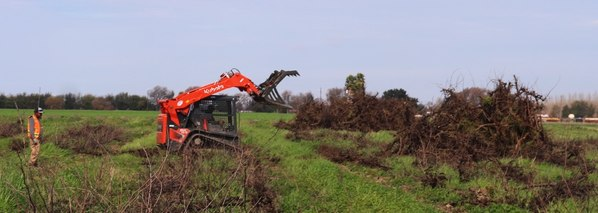
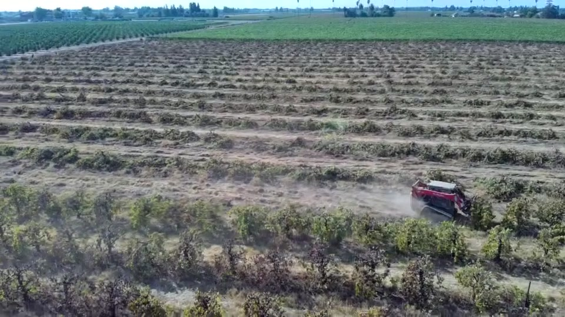
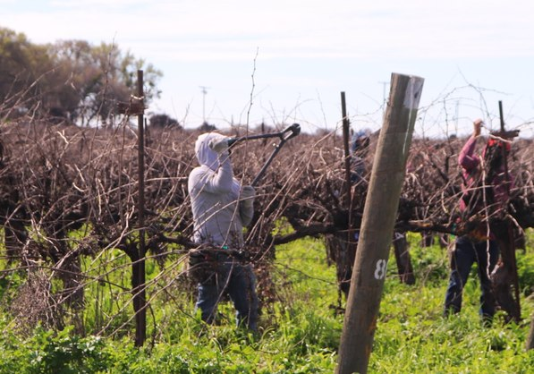
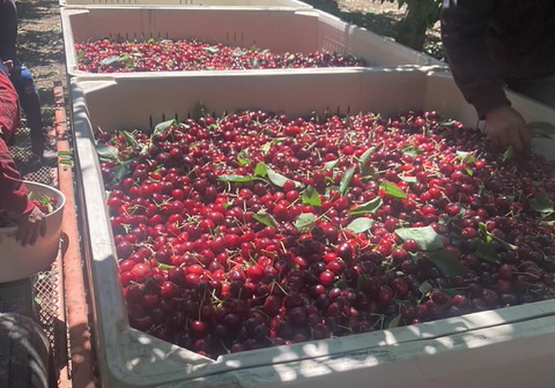
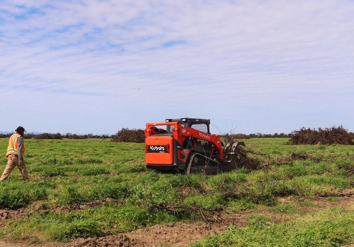
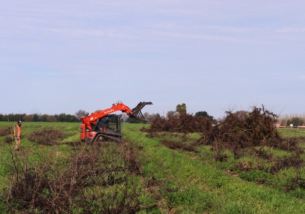
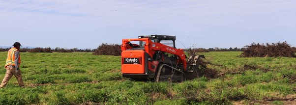

Vineyard Removal
Complete vineyard removal and clearing for redevelopment, replanting or other use.

Vineyard development, removal, harvesting and agricultural services for growers throughout Northern California.




What We Do
Ceja Farms provides experienced crews and equipment to get the job done right—on time, safely and efficiently.

Complete vineyard removal and clearing for redevelopment, replanting or other use.

Field preparation, staking, planting and vineyard establishment for new and replanted acreage.

Dependable harvest crews and equipment when timing and efficiency matter most.

Orchard establishment and development for long-term productivity.

Careful, efficient picking crews to help protect your crop quality and maximize yield.

Disc ripping, land clearing, leveling, debris management and more custom field services.

Ceja Farms can assist qualifying growers with the application process for available vineyard-removal and tree-assistance programs through the San Joaquin Valley Air Pollution Control District and USDA Tree Assistance Program (TAP).
Learn About TAP AssistanceRooted in hard work and built on relationships that last.
Our crews are trained, our equipment is maintained, and safety comes first.
We show up, stay on schedule and get the job done right.
From the San Joaquin Valley to surrounding counties.